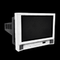
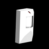

Es folgt eine Liste aller Lichtquellen, die in den Klassenräumen vorkommen:
 Fenster
Fenster
Sogar in der Dunkelheit einfach zu sehen, können Fenster mit einem Schuss aus der Schleuder oder durch Kirschbomben zerbrochen werden. Wenn ein Fenster zerbricht, dann fällt Licht in den ganzen Raum. Fenster können nicht repariert werden und das Licht erhellt die Puzzleräume weiterhin ohne eine Zeitbegrenzung. Fenster erhöhen nicht den Lichtpegel auf dem Lichtmessgerät, da sie keinen Strom benötigen.
 Lampe
Lampe
Die Lampe kann ein- und ausgeschaltet werden und liefert einen mittelgrossen Kreis aus Licht unmittelbar um sich selbst herum. Jede Lampe muss einzeln ein- oder ausgeschaltet werden.

Fernseher
Fernseher können nicht direkt eingeschaltet werden. Stattdessen muss der Spieler die Fernbedienung finden, um den Fernseher aus der Ferne einzuschalten. Der Fernseher erzeugt eine kleine Kugel aus Licht unmittelbar for dem Schirm. Wenn mehrere Fernseher in einem Raum sind, dann kann mit der Fernbedienung zwischen ihnen umgeschaltet werden.
 PC Monitor
PC Monitor
Alle Compputermonitore sind über das Netzwerk verbunden. Wenn ein Monitor in einem Raum eingeschaltet wird, werden auch alle anderen Monitore eingeschaltet und das gilt auch für das Ausschalten. Deswegen können PC Monitore den Lichtpegel ziemlich schnell erhöhen. PC Monitore können auch ausfallen. Falls ein Monitor anfängt zu flackern, dann sollte der Spieler aus dem Weg gehen, um nicht in der Dunkelheit gefangen zu werden. Nicht mehr als ein PC Monitor fällt aus zur gleichen Zeit und jeder ausgefallene Monitor schaltet sich nach ein paar Sekunden wieder ein.
 Oszillierendes Licht
Oszillierendes Licht
Das oszillierende Licht funktioniert wie ein oszillierender Tischventilator. Es rotiert vor- und zurück in einer langsamen gleichmässigen Geschwindigkeit und stopt jeweils am Ende einer Bewegung für einige Sekunden, bevor es weiter in die entgegengesetzte Richtung rotiert. Das oszillierendes Licht wirft einen langen Lichtkegel ähnlich zu Jakes Taschenlampe, mit dem er durch den Raum gehen kann. Wenn ein oszillierendes Licht ausgeschaltet wird, dann fährt es von derselben Position in der Bewegung fort, wenn es wieder eingeschaltet wird.

Bewegungssensor
Der Bewegungssensor erzeugt einen grossen Lichtkreis unterhalb, sobald Jake oder ein Projektil sich auf einige Fuss nähert. Sobald aktiviert, bleibt das Licht für ungefähr 10 Sekunden an, bevor es ausschaltet. Nachdem sich der Sensor abschaltet, kann er reaktiviert werden, aber es ist nicht möglich den Bewegungssensor länger als 10 Sekunden am Stück eingeschaltet zu haben.